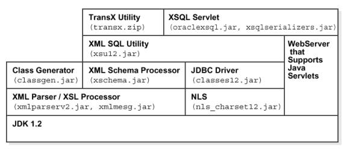

Getting Started with XDK Java Components
Sept 15, 2003
1. Introduction
XDK Java Components contain the basic
building blocks for reading, manipulating, transforming and viewing XML
documents. Oracle XDK Java Components consist of the following components:
-
XML Parser: supports parsing XML documents with either the DOM or SAX interfaces.
-
XSL Processor: is included as part of the XML Parser and supports transforming
XML documents.
-
XML Schema Processor: supports parsing and validating XML files against
an XML Schema definition file (default extension .xsd).
-
JAXB Class Generator: generates a set of Java source files based on XML
Schema.
-
XML SQL Utility: generates an XML Document from SQL queries and insert
the document into the database.(Release
Notes)
-
TransX Utility: makes it easier to load translated seed data and messages
into the database(Release Notes)
-
XSQL Servlet: produces dynamic XML documents based on one or more SQL queries
(Release Notes)
-
XML Java Beans: visually transform, validate, diff and compress XML documents
via Java components
-
XML Pipeline processor: specifies Java processes to be executed in a declarative
manner.
2. Setup the Environment
2.1 Installation of XDK Java Components
First, let's install the XDK package.XDK comes
with Oracle Database and with the iAS application server. You can also
download the latest beta and production versions of XDK from OTN.
If you installed XDK with Oracle Database or iAS, you can skip the
following steps and direct to refer to the XDK home directory (We will
refer to this directory as $XDK_HOME or %XDK_HOME% in the later sections)
in ORACLE home(We will refer to this directory as $ORACLE_HOME or %ORACLE_HOME%in
the later sections).
If you need download the XDK from OTN, please follow these steps:
After installing the XDK, the directories
related to Java components are:
-$XDK_HOME
| - bin: executable files and setup script/batch files.
| - lib: library files.
| - nls/data: NLS files
| - xdk
| - admin (Administration): SQL script and XSL Servlet Configuration file(XSQLConfig.xml).
| - demo/java: demonstration code
| - doc/java: documents including release notes and javadocs.
2.2 XDK Java Components Components
All of the XDK Java Components are certified
and supported with JDK 1.2, JDK 1.3.1, JDK 1.4,.Make sure that your Java
CLASSPATH includes all the necessary libraries:
Table 2.1: XDK Java Components Libraries
|
|
Component
|
Library
|
Notes
|
|
XML Parser
XSL Processor
XML Pipeline Processor
|
xmlparserv2.jar
|
XML Parser V2 for Java, which includes
JAXP 1.1, JAXP 1.2 DOM, SAX and XSLT APIs, XML Schema Processor,
and JAXB Class Generator.
|
| All XDK Components |
xmlmesg.jar |
Message files for XML Parser. If you want
to use XML Parser with language other than English, you need to set this
jar file in your CLASSPATH.
|
|
XML Schema Processor
|
xschema.jar
|
XML Schema Processor for Java |
|
XML SQL UtilityX
|
xsu12.jar
|
XML SQL Utility for JDK 1.2 and above
|
|
XSQL Servlet
|
oraclexsql.jar
|
Oracle XSQL Servlet
|
|
xsqlserializers.jar
|
Oracle XSQL Serializers for FOP/PDF Integration
|
|
Class Generator
(deprecated 9i Class Generator)
|
classgen.jar
|
Class Generator for Java (deprecated in
10.0)
|
|
JavaBeans
|
xmlcomp.jar
xmlcomp2.jar
|
JavaBeans Utilities
|
|
TransX Utility
|
Transx.zip
|
Oracle TransX Utility
|
In addition, XML SQL Utility, XSQL Servlet and TransX Utility will depend
on JDBC and NLS libraries, which is listed in the following table:
Table 2.2: Depended libraries of XDK Java Components
|
|
Component
|
Library
|
Notes
|
|
JDBC
|
classes12.zip
|
JDBC for JDK 1.2 and above.
|
|
NLS
|
nls_charset12.jar
|
NLS support for JDK 1.2 and above.
|
|
XMLType
|
xdb.jar
|
XMLType Java APIs. $ORACLE_HOME/rdbms/jlib/
|
|
Jdev Runtime
|
jdev-rt.zip
|
Java GUI libraries.
|
2.3 Environment Settings for XDK Java Components
Now, how to setup the environment variables? In
XDK releases, there are already script files or batch files, which help
to set up the environment:
On UNIX:
$XDK_HOME/bin/env.csh
On Windows:
%XDK_HOME/bin/env.bat
The following tables list the environment variables needed during XDK
setup. All of the variable need to be customizing before running the script/batch
file is marked as ?YES? in ?Customize? column.
UNIX Environment Settings
Table 2.3 Unix Environment Settings
|
| Variable Name |
Values
|
Customize |
|
$JDBCVER
|
JDBC Version. If using JDK 1.2 and above,
it should be set to be 12.
|
YES
|
|
$JDKVER
|
JDK Version, which you can got when running:
java -version
e.g. The default value is : 1.2.2_07
|
YES
|
|
$INSTALL_ROOT
|
Installation root of XDK, which is the
directory we referred as $XDK_HOME.
|
NO
|
|
$JAVA_HOME
|
Directory where the Java SDK Standard
Edition is installed.
|
YES
|
|
$CLASSPATHJ
|
${ORACLE_HOME}/jdbc/lib/classes${JDBCVER}.zip
${ORACLE_HOME}/jdbc/lib/nls_charset${JDBCVER}.jar
If you are running the XSU on a system
different from where the Oracle RDBMS is installed, you will have to update
CLASSPATHJ path with the correct locations of the JDBC library (classes12.jar).
The nls_charset12.jar is needed to support certain character sets. Refer
to
NLS
setup with XDK Java ComponentsNote that if you don't have these libraries
on your system, these are both available on OTN (http://otn.oracle.com)
-- part of JDBC
driver download |
YES
|
|
$CLASSPATH
|
Include the following:
.:${CLASSPATHJ}:${INSTALL_ROOT}/lib/xmlparserv2.jar
${INSTALL_ROOT}/lib/xschema.jar
${INSTALL_ROOT}/lib/xsu${JDBCVER}.jar
${INSTALL_ROOT}/lib/oraclexsql.jar
${INSTALL_ROOT}/lib/classgen.jar
|
NO
|
|
$PATH
|
${JAVA_HOME}/bin:${PATH}:${INSTALL_ROOT}/bin
|
NO
|
|
$LD_LIBRARY_PATH
|
For OCI JDBC connections. ${ORACLE_HOME}/lib:${LD_LIBRARY_PATH}
|
NO
|
Windows Environment Settings
|
Table 2.4 Windows Environment Settings
|
| Variable Name |
Values
|
Customize |
|
%JDBCVER%
|
JDBC Version. If using JDK 1.2 and above,
it should be set to be 12.
|
YES
|
|
%JDKVER%
|
JDK Version which you can got when running
java -version
E.g. The default value is : 1.2.2_07
|
YES
|
|
%INSTALL_ROOT%
|
Installation root of XDK, which is the
directory we referred as %XDK_HOME%.
|
NO
|
|
%JAVA_HOME%
|
Directory where the Java SDK, Standard
Edition is installed. Path linked to the Java SDK need to be modified.
|
YES
|
|
%CLASSPATHJ%
|
CLASSPATHJ=%ORACLE_HOME%\jdbc\lib\classes%JDBCVER%.zip;
%ORACLE_HOME%\jdbc\lib\nls_charset%JDBCVER%.jar
|
YES
|
|
%PATH%
|
PATH=%JAVA_HOME%\bin;%ORACLE_HOME%\bin;%PATH%;%INSTALL_ROOT%\bin
|
NO
|
|
%CLASSPATH%
|
.;%CLASSPATHJ%;%INSTALL_ROOT%\lib\xmlparserv2.jar;
%INSTALL_ROOT%\lib\xschema.jar;
%INSTALL_ROOT%\lib\xsu%JDBCVER%.jar;
%INSTALL_ROOT%\lib\oraclexsql.jar;%INSTALL_ROOT%\lib\classgen.jar
|
NO
|
2.4 XSU Setup for Databae JVM
2.4.1 Initialization Java Virtual Machine
Before using loadjava utility to load the java libraries
into database schema, you need to get the JavaVM properly installed. You
have to run INITJVM.SQL and INITDBJ.SQL script to initialize the java environment
before running the loadjava utility.
Usually these are in the $ORACLE_HOME/javavm/install subdirectory of your
Oracle Home.
2.4.2 Using xdkload
To load the XDK for PL/SQL packages into the database
schema, you can use the script or batch files provided by XDK.
On UNIX:
$XDK_HOME/bin/xdkload
On Windows:
XDK_HOME/bin/xdkload.bat
The Usage of xdkload is:
xdkload -u <username/password> [-s] [-noverify] [-dbver]
-s Creates public synonyms for the loaded java APIs; this can be invoked only if the target user has dba privileges.
-noverify Use this if you are loading into an older version of the db and are running into an error about missing method (e.g. if you are loading xsu version 9.0.1.0.0 into oracle 8.1.7).
-dbver Used to specify the version of the database into which you are loading XDK. This is a must if you are loading into old versions of oracle (i.e. version of oracle is older than the version of the XDK). This option also sets the -noverify.
For example:
xdkload -u "system/manager" -s -dbver "816"
This example uses xdkload to load the XDK for PL/SQL
packages using to system user.
Before using xdkload, you need to check if any of
the libraries including xmlparserv2.jar, xmlxsql.jar and xsu12.jar (xsu111.jar)
is already loaded to the database. If so, you need to drop them before
using xdkload, like:
dropjava -verbose -user xdktemp/xdktemp xmlparserv2.jar xschema.jar
Moreover, you need to setup the environment variables
by using the script or batch file XDK provided:
On UNIX:
$XDK_HOME/bin/env.csh
On Windows:
$XDK_HOME/bin/env.bat
After running the xdkload script or batch file,
if the target user used to run xdkload has dba privileges, then the XSU
for PL/SQL package will be available to all the users and the public synonyms
for the PL/SQL packages are also created. Otherwise, the XDK for PL/SQL
packages will be available only to the target user.
2.5 XSQL Servlet Setup
The XSQL Servlet is designed to run on any Java
VM, using any JDBC driver, against any database. In practice, we are able
to test it against only the most popular configurations of these. In this
section, we document the supported configurations that have been tested
in the Oracle labs.
2.5.1 Supported Java JDK Versions
The XSQL Pages and XSQL Servlet have been tested using:
JDK 1.1.8
JDK 1.2.2
JDK 1.3
2.5.2 Supported Servlet Engines
This XSQL Servlet has been tested with the following servlet engines:
Oracle9iAS Apache/JServ Servlet Engine
Oracle9iAS OC4J Servlet Engine
Allaire JRun 2.3.3 and 3.0.0
Apache 1.3.9 with JServ 1.0 and 1.1
Apache 1.3.9 with Tomcat 3.1 or 3.2 Servlet Engine
Apache Tomcat 3.1 or 3.2 Web Server + Servlet Engine
Caucho Resin 1.1
Java Web Server 2.0
Weblogic 5.1 Web Server
NewAtlanta ServletExec 2.2 and 3.0 for IIS/PWS 4.0
Oracle8i Lite Web-to-Go Server
Oracle8i 8.1.7 Oracle Servlet Engine
Sun JavaServer Web Development Kit (JSWDK) 1.0.1 Web Server
2.5.3 Supported JSP Implementations
Oracle9iAS Apache/JServ Servlet Engine
Oracle9iAS OC4J Servlet Engine
Apache 1.3.9 with Tomcat 3.1 or 3.2 Servlet Engine
Apache Tomcat 3.1 or 3.2 Web Server + Tomcat 3.1 or 3.2 Servlet Engine
Caucho Resin 1.1 (Built-in JSP 1.0 Support)
NewAtlanta ServletExec 2.2 and 3.0 for IIS/PWS 4.0 (Built-in JSP 1.0
Support)
Oracle8i Lite Web-to-Go Server with Oracle JSP 1.0
Oracle8i 8.1.7 Oracle Servlet Engine
Any Servlet Engine with Servlet API 2.1+ and Oracle JSP 1.0
In general, it should work with any servlet engine supporting the Servlet
2.1 Specification or higher, and the Oracle JSP 1.0 reference implementation
or functional equivalent from another vendor.
2.5.4 JDBC Drivers and Databases
The Oracle XSQL Page processor has been designed to exploit the maximum
set of features against the Oracle JDBC drivers, but gracefully
degrade to work against any database with a reasonable JDBC driver. While
numerous users have reported successfully using XSQL Pages with many other
JDBC drivers, the ones that we have tested in-house are:
Oracle8i 8.1.5 Driver for JDBC 1. x
Oracle8i 8.1.6 Driver for JDBC 1. x
Oracle8i 8.1.7 Driver for JDBC 1. x
Oracle8i Lite 4.0 Driver for JDBC 1.x
Oracle8i 8.1.6 Driver for JDBC 2.0
Oracle8i 8.1.7 Driver for JDBC 2.0
Oracle9i 9.0.1 Driver for JDBC 2.0
2.5.5. Setting Up the Database Connection Definitions for Your Environment
The demos are set up to use the SCOTT schema on a database
on your local machine (i.e. the machine where the web server is running).
If you are running a local database and have a SCOTT account
whose password is TIGER, then you are all set. Otherwise,
you need to edit the .\xdk\admin\XSQLConfig.xml file to correspond
to your appropriate values for username, password,
dburl, and driver values for the connection named
"demo".
<?xml version="1.0" ?>
<XSQLConfig>
:
<connectiondefs>
<connection name="demo">
<username>scott</username>
<password>tiger</password>
<dburl>jdbc:oracle:thin:@localhost:1521:ORCL</dburl>
<driver>oracle.jdbc.driver.OracleDriver</driver>
</connection>
<connection name="lite">
<username>system</username>
<password>manager</password>
<dburl>jdbc:Polite:POlite</dburl>
<driver>oracle.lite.poljdbc.POLJDBCDriver</driver>
</connection>
</connectiondefs>
:
</XSQLConfig>
2.6 JAXB Class Generator Setup
The JAXB demos require the javax.xml.bind package and javax.xml.namespace
package.
These packages are not bundled in the current XDK release. These packages
can be obtained from the Java Web Services Developers Pack 1.1
Please follow these steps to run the demos:
-
Download the Java Web Services Developers Pack 1.1 from the location:
http://java.sun.com/webservices/downloads/webservicespack.htm
-
Install the webserivices pack. Choose JAXB in the installation option
-
Set the XDKINSTALL_ROOT and ORACLE_HOME to the
root of the xdk install directory
-
Change directory to <XDKINSTALL_ROOT>/bin and run
the env.csh
-
Add the jaxb-api.jar to the classpath. The jaxb-api.jar could be
found in <WEBSERVICES_INSTALL_ROOT>/jaxb-1.0/lib/jaxb-api.jar
-
Set the JAVA_HOME to JDK 1.3 (or above) installation
root
-
Run the makfile : make demo
2.7 XDK Java Components with National Language Support (NLS)
If you follow up the setup steps talked
above, you don?t need to do anything further to use XDK for National Language
Support. In this section, we give a summary on the settings that related
to NLS.
Using xmlmesg.jar: If you use languages other than English, you would need
to set the xmlmesg.jar into your java CLASSPATH
to let parser get correct messages in your language.
Using nls_charset12.jar: If you use a multi-byte character set other
than one of the following
UTF-8
ISO8859-1
JA16SJIS
Then you must set this jar file to your
java CLASSPATH so that JDBC can convert the character set of the input
file to the database character set during loading of XML files using XSU,
TransX or XSQL Servlet.
3. XDK dependencies
The following Figure 3-1 shows the dependencies
of XDK when using JDK 1.2 and above:

Figure 3-1: XDK Dependencies
4. Summary
After you correctly setup the environment,
include all the necessary jar files in your CLASSPATH. You can then start
writing your java programs and compiling them with the javac command:
javac <your program>.java
If the compilation finishes without errors,
then you can just test your program using command line or the Web Server,
which depends on your application.